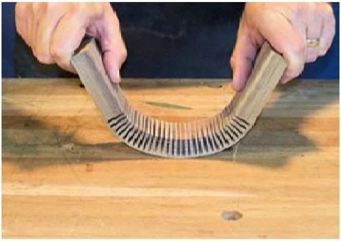
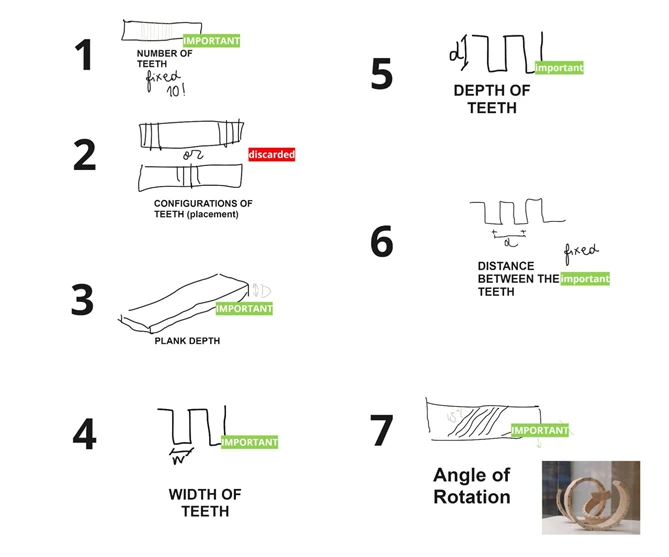
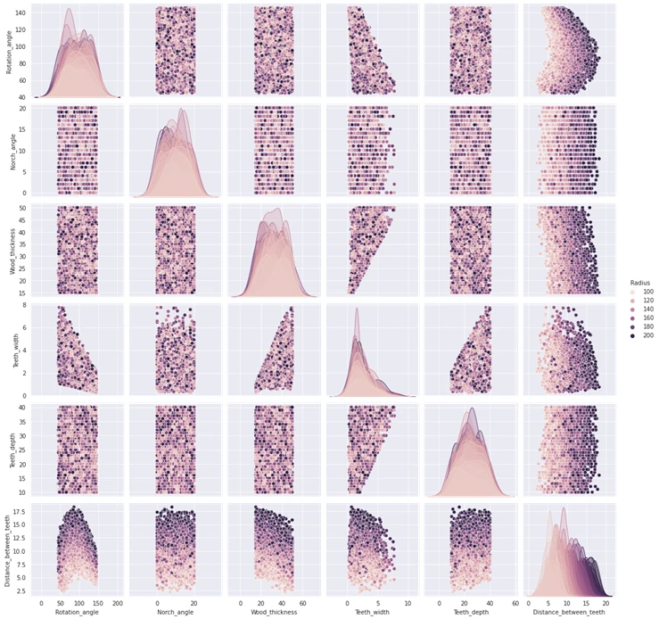
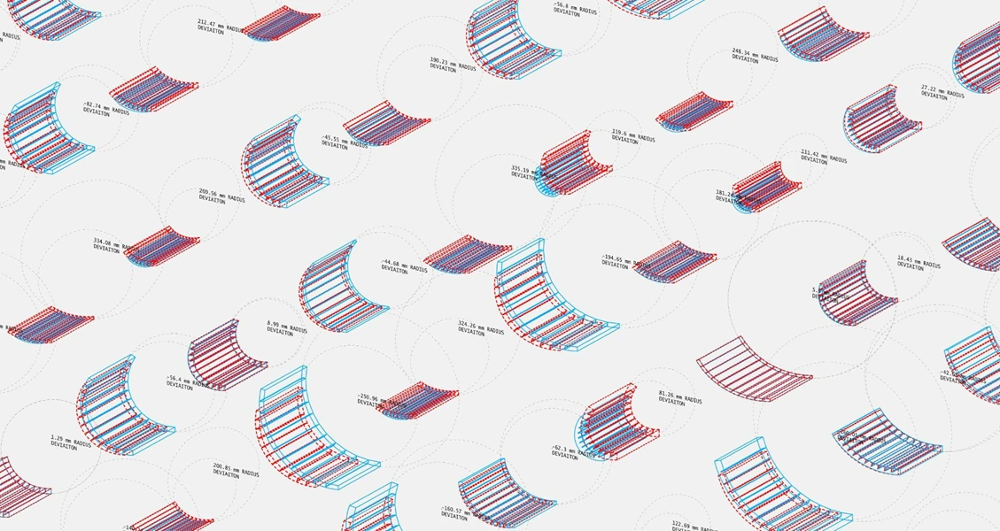
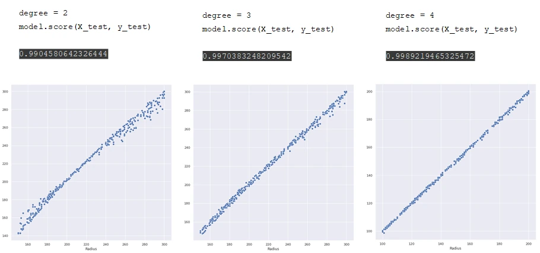
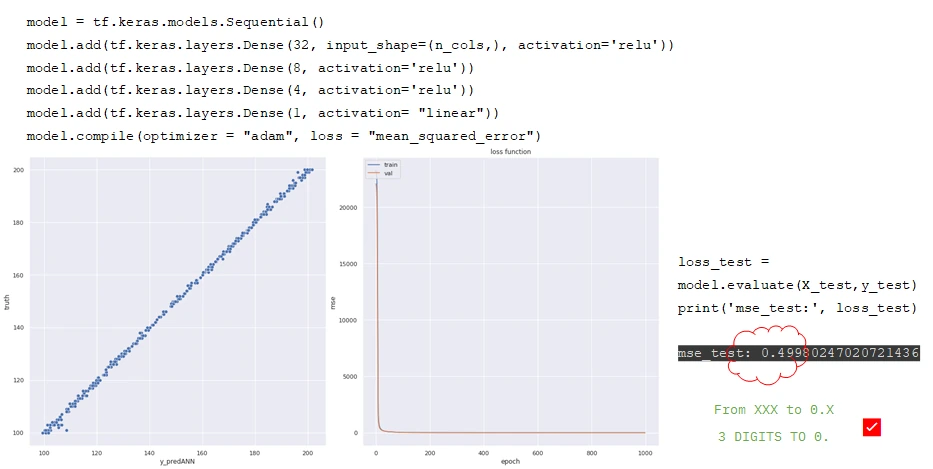
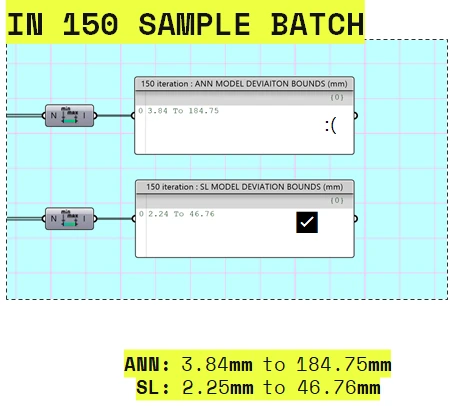

Data Encoding & ML · 3.S.1 · 2022
Data Encoding & ML · 3.S.1 · 2022Wood Kerf-Bending
Teaching a model to predict curvature from a timber kerf pattern.
Wood Kerf-Bending studies how strategic cuts allow a flat timber sheet to curve. The project connects a parametric kerf geometry to the bending radius it produces, treating material behaviour as a dataset that can be analysed and predicted.
The team generated thousands of kerf configurations, compared regression and neural-network models, then returned the predictions to Grasshopper. The result is a surrogate model that can estimate the curvature of a new design before a physical test.

- Nature
- Academic group project
- Programme
- Master in Advanced Computation for Architecture & Design
IAAC · Data Encoding & Machine Learning - Term
- 3.S.1 Final · 12 June 2022
- Group
- Naitik Sharma
Mahmoud Ramdane
Olga Poletkina - Faculty
- Gabriella Rossi
- Teaching assistant
- Hesham Shawqy
Research question
How can machine learning learn and predict the curvature radius of a kerf-bent timber sheet? The project tests the relationship between the cut pattern in a flat sheet and the radius of the resulting curve, then uses that relationship in reverse as a design aid.
01 — Material behaviour
Cut a pattern into a sheet to make curvature possible.
Kerf bending removes material precisely where the sheet must flex. The remaining teeth act as a compliant region, so a normally stiff timber sheet can bend without becoming a uniform thin strip.
The material effect depends on the pattern. A different arrangement of teeth changes how the sheet distributes strain and therefore changes the radius it can reach.

02 — Parametric model
Expose the variables that shape the bend.
A Grasshopper workflow produces the kerf region from a set of geometric inputs. The model considers notch angle, timber thickness, rotation, tooth depth, tooth width and the distance between teeth, then records the curvature radius as the target value.
The same workflow can begin with a desired radius and search for a matching cut geometry. This reciprocal relationship makes the model useful to both analysis and design.


03 — Data encoding
Turn the kerf family into a dataset that can be tested.
The group iterated through four datasets, generating 2,000 kerf configurations in each dataset study. Early sets revealed outliers and Grasshopper boolean failures, so the later dataset refined the radius range and feature preparation.
Principal Component Analysis helped inspect feature relationships before training. The dataset keeps the geometric inputs tied to their output radius instead of treating the model as an opaque image predictor.


04 — Regression models
Compare simple regression with an artificial neural network.
The submitted workflow tests Linear Regression, Kernel Ridge Regression, XGBoost and an Artificial Neural Network. The fourth-degree Kernel Ridge model reached a 0.9989 score on its held-out test set in the reported experiment, while the team used the ANN to study a second route to the same prediction task.
Model evaluation remained connected to geometry: predicted radii were compared with the radius generated by the parametric model, including the more difficult small-radius cases.


05 — Surrogate model
Bring the prediction back into the design environment.
The trained models are saved and accessed through Hops so Grasshopper can request a predicted radius for a newly generated kerf. The workflow therefore becomes a feedback loop: create a real model, send its parameters to the model, read the predicted curvature, and generate the next version.
The final comparison records both ANN and shallow-learning deviations over a 150-sample batch. It makes uncertainty visible rather than presenting the prediction as a replacement for physical testing.

- Grasshopper
- Geometric generation
Build kerf regions, vary the material parameters and produce the curved sample geometry.
- PCA + regression
- Feature analysis and shallow learning
Inspect the dataset, then compare linear, Kernel Ridge and XGBoost regression models.
- TensorFlow + Hops
- Neural prediction in the design loop
Train an ANN and expose saved models to Grasshopper for new radius predictions.
Credits & source
Wood Kerf-Bending is a group project developed at IAAC, Institute for Advanced Architecture of Catalonia, within Data Encoding & Machine Learning, 3.S.1.
Group 1: Mahmoud Ramdane, Naitik Sharma and Olga Poletkina. Faculty: Gabriella Rossi. Teaching assistant: Hesham Shawqy.
All images, datasets and model outputs are drawn from the group’s final 2022 presentation.